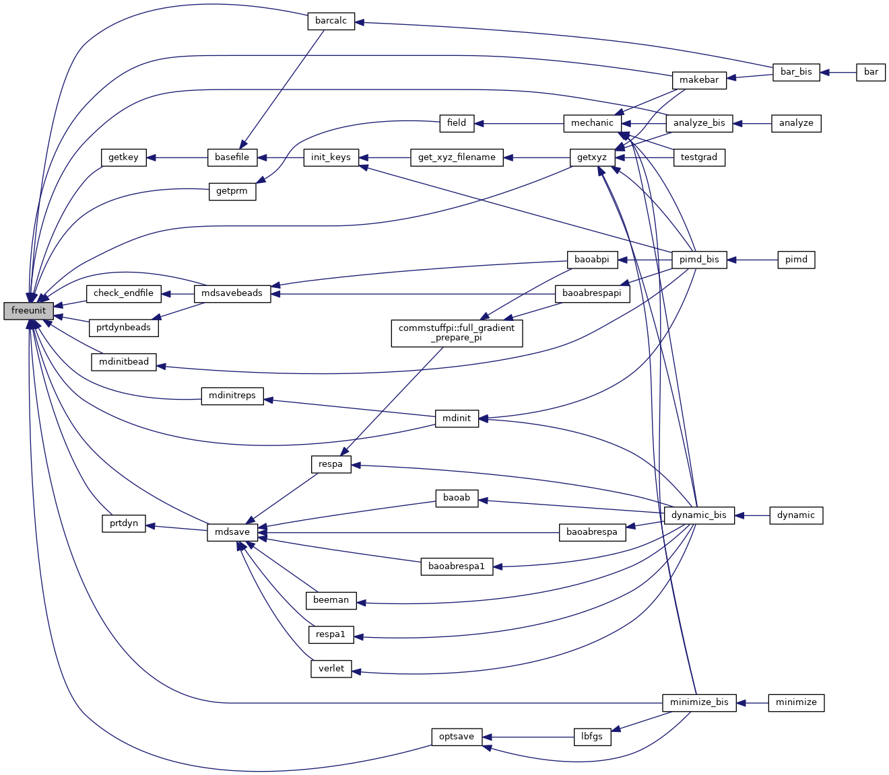

|
Tinker-HP v1.3
|
|
Tinker-HP v1.3
|
Go to the source code of this file.
Functions/Subroutines | |
| integer function | freeunit () |
| finds an unopened Fortran I/O unit and returns its numerical value from 1 to 99; the units already assigned to "input" and "iout" (usually 5 and 6) are skipped since they have special meaning as the default I/O units More... | |
| integer function freeunit | ( | ) |
finds an unopened Fortran I/O unit and returns its numerical value from 1 to 99; the units already assigned to "input" and "iout" (usually 5 and 6) are skipped since they have special meaning as the default I/O units
| no | params |
Definition at line 25 of file freeunit.f90.
References fatal().
Referenced by analyze_bis(), barcalc(), check_endfile(), getkey(), getprm(), getxyz(), makebar(), mdinit(), mdinitbead(), mdinitreps(), mdsave(), mdsavebeads(), minimize_bis(), optsave(), prtdyn(), and prtdynbeads().

 1.8.5
1.8.5